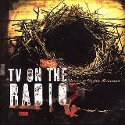

|
| Contact Us |
|---|
KCUR 89.3 FM
4825 Troost, Suite 202
Kansas City, MO 64110
phone: 816-235-1551
fax: 816-235-2864
email: kcur@umkc.edu
|
|
| Sonic Spectrum |
|---|
|
2:00-4:00 p.m. Saturday
Contact Robert at moorerb@umkc.edu
Robert Moore, KCUR's Music Director, presents two hours of freeform music programming, including interviews and in-studio performances. From indie rock to honky tonk...you'll hear it on Sonic Spectrum.
|
Robert Moore, Music Director, Assistant Program Director
Host of Sonic Spectrum
Phone: (816) 235 -2869
Robert is a Los Angeles native who started in the music business in 1987 with IRS Records. He moved onto indie publishing giant Bug Music in 1989 and Virgin Records in 1990. In 1992, he moved to greener pastures (literally) relocating to Kansas City. He joined the KCUR staff in 1995 as a jazz programmer, creating Take Five. Robert has also served as Afternoon Drive announcer, host of The Swing Club, and a producer for Cyprus Avenue. He is currently our Assistant Program Director and Music Director, and is an Instructor in Liberal Arts at the Kansas City Art Institute.
Robert was part of the news team that brought KCUR its first national news award in 1996. He is a member of the Advisory Board for the syndicated radio program "American Routes" where he serves as a music consultant. Sonic Spectrum has received five consecutive Pitch Best of Kansas City Awards including "Best Radio Show" and "Best Local DJ".
Photo credit: Brandon Joseph Baker
BEST RADIO DJ - Reader's Choice
BEST RADIO SHOW - 2005
"Moore labors over each Saturday afternoon program like an obsessive-compulsive vinyl junkie, picking only the best...And in his interviews -- whether conducted on the road or in the studio -- Moore avoids pretense, choosing instead to be what he is: a loyal lover of good music."
|
| Sonic Spectrum Around Town |
|---|
Sonic Spectrum live
w/In The Pines and American Catastrophe
March 24th
The Bottleneck
Sonic Spectrum Anniversary Weekend
March 30th & 31st
The Record Bar
Kansas City, MO
8 BANDS, 2 NIGHTS including State Bird, Softee, Ghosty and more!
Check back for updates!
Visit any Borders Books & Music in Lawrence, St. Joseph or the Kansas City area for a display of Robert's current top picks.
|
| Best Music of 2006 with Tim Finn and Robert Moore |
|---|
The December 22nd edition of Up to Date featured Best Music of 2006 with
Kansas City Star pop music critic Tim Finn and Sonic Spectrum
host Robert Moore. They talked with Steve Kraske about their picks for
best albums of 2006 - all of which would make great gifts for the
holiday season.
Check out Tim Finn's blog at backtorockville.typepad.com
Robert Moore's Picks
|
Tim Finn's Picks
|
Hot Chip
The Warning
The Warning
(Astralwerks) |
Gnarls Barkley
Go-Go Gadget Gospel
St. Elsewhere
Downtown) |

White Whale
What's an Ocean For?
WW1
(Merge Records)
|

TV on the Radio
Wolf Like Me
Return to Cookie Mountain
(Interscope Records)
|

Tom Waits
Widow's Grove
Orphans
(Anti Records) |
In the Pines
Dress on Fire
In the Pines
|
Arab Strap
Dream Sequence
The Last Romance
(Transdreamer)
|
The Black Angels
The Prodigal Sun
Passover
(Light in the Attic Records)
|
Haley Bonar
Fox and Hound
Lure the Fox
(Afternoon Records)
|
Sunny Sweeney
Lavender Blue
Heartbreaker's Hall of Fame
(Big Machine Records
|

Johnny Cash
God's Gonna Cut You Down
American V: A Hundred Highways
(American recordings)
|
Neko Case
John Saw That Number
Fox Confessor Brings the Flood
(Anti)
|

The Boy Least Likely To
Be Gentle With Me
The Best Party Ever
(Too Young to Die records)
|
|
|
|
| Sonic Spectrum Blog, Interviews, Podcast |
|---|

|
View Sonic Spectrum playlists and listen On-Demand here.
|
| Music Programs, Playlists & Archives |
|---|
The Fish Fry
Friday and Saturday
8 p.m. - midnight
Chuck Haddock serves up the best in blues, r&b, soul, jumpin' jazz and zydeco.
Fish Fry Playlists and Archives
Cyprus Avenue
Saturday, 12-2pm
The world of popular music from gospel to rock - from country to reggae - from a different point of view.
Sonic Spectrum
Saturday, 2 - 4 p.m.
Host Robert Moore presents two hours of freeform music programming, including interviews and in-studio performances.
Sonic Playlists and Archives
American Routes
Sunday, 2 - 4 p.m.
Blues, roots rock, ragtime, jazz, gospel,soul,zydeco and beyond.
Night Tides
Sunday, 8 p.m. - midnight
Eclectic blend of contemporary and new age instrumental & electronic music.
Night Tides Playlists and Archives
Kansas City Symphony Hour
Thursday, 9 p.m. - 10 p.m.
NPR Music
The World: Global Hit
|
|